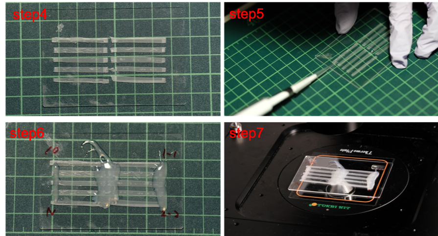

1. We took 20 µL of streptavidin beads from stock into a 500 µL tube.
2. After vortex of the tube, we centrifuged supernatant and re-suspended in BW buffer (Washing buffer) 100 µL.
3. Washed three times with 100 µL of BW buffer (Centrifuge and re-suspension).
4. In order to anneal strands, we put pairs of linker DNAs written as below on 95°C for 10 minutes in other tubes, then cooled at room temperature for 10 minutes.
-mix1: D1 unit1 biot 100 µM 3 µL + D1 unit2 100 µM 3 µL
-mix2: D2 unit1 biot 100 µM 3 µL + D2 unit2 100 µM 3 µL
5. We mixed beads solution and strands solution as following.
-D1: 24 µL of TE buffer + 6 µL of mix1
-D2: 24 µL of TE buffer + 6 µL of mix2
6. Washed D1 and D2 as following:
-100 µL of BW buffer two times.
-100 µL of SB buffer two times.
Finally we suspended D1 and D2 in SB buffer.
1.Cut parafilm into rectangular slices.
2.Put the slices on a microscope slide
3.Put cover glass on the slices
4.Heat the glasses to fix
5.Put samples in lanes respectively
6.Apply glue on the edge of the cover glass in order to prevent the samples from evaporating
7.Put the chamber on thermo plate and observe it with microscope

Experiment 1: Aggregation of Beads with normal linker
| Mastermix |
| Ppmix |
25% |
| D1 stock |
10% |
| D2 stock |
10% |
| Tween 20 |
0.05% |
| MQ full up |
|
| Sample1 |
Mastermix + Normal linker 10uM |
| Sample2 |
Mastermix + Normal linker 1uM |
| Sample3 |
Mastermix + Normal linker 0.1uM |
| Sample4 |
Mastermix + MQ |
Experiment 2: Aggregation of Beads with AND gate linker Mastermix is as same as Experiment 1.
| Sample1 |
Mastermix + Linker AND1 10uM |
| Sample2 |
Mastermix + Linker AND2 10uM |
| Sample3 |
Mastermix + Linker AND1 10uM + Linker AND2 10uM |
| Sample4 |
Mastermix + MQ |
Experiment 3: Amplification of normal linker
| Mastermix |
| Smix |
x1 |
| α to Normal Linker |
10nM |
| BSA9000S |
1% |
| Vent polymerase |
3% |
| NB.BsmI nickase |
4% |
| EvaGreen |
x1 |
| TE buffer |
full-up |
| Samples |
| Sample1 Mastermix + α |
100 nM |
| Sample2 Mastermix + α |
100 nM |
| Sample3 Mastermix |
0 nM |
| Sample4 Mastermix |
0 nM |
Experiment 4: Amplification of AND gate linker
| Mastermix |
|
| Ppmix |
25% |
| α to linker AND1 |
100nM |
| β to linker AND2 |
100nM |
| D1 unit2 |
100nM |
| D2 unit2 |
100nM |
| Evagreen |
5% |
| BSA9000S |
1% |
| BstWS2.0/10 |
3% |
| NB.BsmI |
4% |
| RecJtt/140 |
1% |
| MQ |
full up |
| Sample1 |
Mastermix + α1nM β1nM |
| Sample2 |
Mastermix + α1nM |
| Sample3 |
Mastermix + β1nM |
| Sample4 |
Mastermix + MQ |
Experiment 5: Amplification of normal linker and Aggregation of Beads with normal linker
| Mastermix |
|
| Ppmix |
25% |
| α to Normal linker |
100nM |
| D1 |
x0.1 |
| D2 |
x0.1 |
| Tween 20 |
0.05% |
| Evagreen |
5% |
| BSA9000S |
1% |
| BstWS2.0/10 |
3% |
| NB.BsmI |
4% |
| MQ |
full-up |
| Sample1 |
Mastermix + α100nM |
| Sample2 |
Mastermix |
Experiment 6: Tuning the concentration of α to linker
|
100 nM |
10 nM |
1 nM |
NC |
| TE Buffer |
1.7 |
1.7 |
1.7 |
3.7 |
| PPmix-dNTP |
5 |
5 |
5 |
5 |
| dNTP |
0.8 |
0.8 |
0.8 |
0.8 |
| D1 |
2 |
2 |
2 |
2 |
| D2 |
2 |
2 |
2 |
2 |
| EvaGreen |
1 |
1 |
1 |
1 |
| Template Mix 'OR' |
2 |
2 |
2 |
2 |
| α to linker |
2 (100 nM) |
2 (10 nM) |
2 (1 nM) |
0 |
| BSA |
0.2 |
0.2 |
0.2 |
0.2 |
| Bst |
0.3 |
0.3 |
0.3 |
0.3 |
| Nb.Bsm I |
0.8 |
0.8 |
0.8 |
0.8 |
| RECJ |
0.2 |
0.2 |
0.2 |
0.2 |
| 20 nM X |
1 |
1 |
1 |
1 |
| 20 nM Y |
1 |
1 |
1 |
1 |
| Total |
20 |
20 |
20 |
20 |
| Template Mix 'OR' |
100 |
| 1 µM α to α |
30 |
| 1 µM α drain |
15 |
| 1 µM X to α |
1 |
| 1 µM Y to α |
1 |
| TE Buffer |
53 |
Streptavidin Coated Microspheres (BAN Bangs Labratories, Inc. Catalog number: CP1004)
Evagreen®, 20X in water, Unlabeled (BTI, Catalog numbe: 31000)
NB.BsmI (BioLabs, Catalog number: R0706)
Bst 2.0 WarmStart DNA Polymerase (BioLabs, Catalog number: M0538)
Nt.BstNBI (BioLabs, Catalog number: R0607)
RecJtt (Homemade)
DNA strands (Integrated DNA Technologies, US)
| Nanobot strands |
| D1 unit1 |
biot/*C*C*CACAGGCACGCTCAACGCTAACC/Cy5 |
| D1 unit2 |
C*G*T*CGAATGTAG GGTTAGCGTTGAGCGTGCCTGTGGG/phos |
| D2 unit1 |
Cy3/C*C*C*ACAGGCACGCTCAACGCTAACC/biot |
| D2 unit2 |
G*G*G*TGTCCGTGCGAGTTGCGATTGG TCG TTATCGCATCC/phos |
|
| Target |
| X |
TAGCTTATCAGACTGATGTTGA |
| Y |
AGGCAAGATGCTGGCATAGCTGT |
| X to α |
C*G*A*TCCTGAATG CAA TCAACATCAGTCTGAT |
| Y to α |
C*G*A*TCCTGAATG CAA ACAGCTATGCCAGCA |
| Y to β |
C*A*G*TCCAGAATG CAA ACAGCTATGCCAGCA |
|
| Bifurcation |
| α |
CATTCAGGATCG |
| β |
CATTCTGGACTG |
| α to α |
CGATCCTGAATG CGATCCTGAA |
| β to β |
CAGTCCAGAATG CAGTCCAGAA |
| drain α |
T*T*T*TT CGATCCTGAATG |
| drain β |
T*T*T*TT CAGTCCAGAATG |
| β to drain α |
C*A*T*TCAGGATCG TTCAATGACT CAGTCCAGAA |
|
| Normal linker |
CATTC GACG GGATGC GATGT |
|
| AND gate |
| Linker AND 1 |
CATTC GACG AA AAGGGG GAATG |
| Linker AND 2 |
CATTC CCCCTT AA GGATGC GATGT |
| α to Linker AND 1 |
CATTC CCCCTT TT CGTA GAATG CGATCCTGAATG |
| β to Linker AND 2 |
ACATCGCATCC TT AAGGGG GAATG CGATCCTGAATG |
CFX96 (BIO-RAD, Catalog number: 1855196J1)
Nikon Eclipse Ti2 (Nikon)